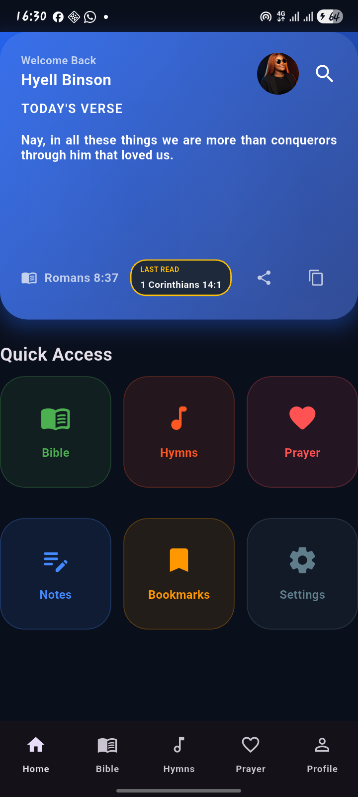
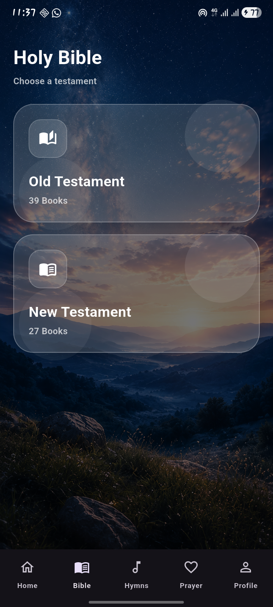
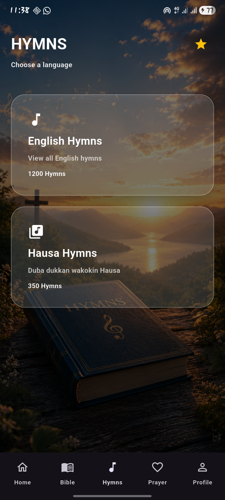
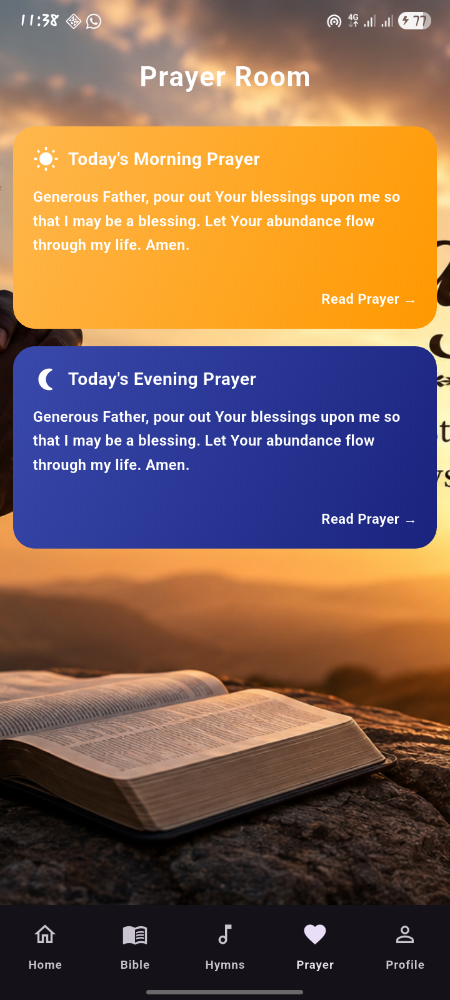

HEKAN Bible is a beautiful offline Bible application with Daily Verses, Morning & Evening Prayers, Hymns, Notes, Bookmarks, Notifications and Dark Mode.

Read the Bible anytime without internet.
Morning and Evening prayers every day.
English and Hausa Hymns included.
Encouraging scripture every day.
Save personal Bible study notes.
Receive daily verses and prayer reminders.



Current Version